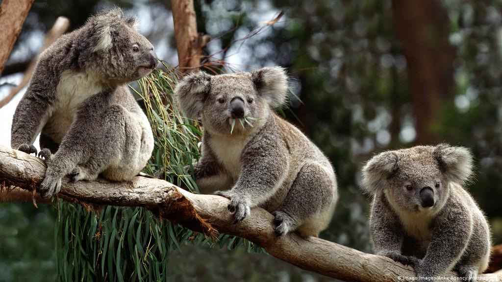
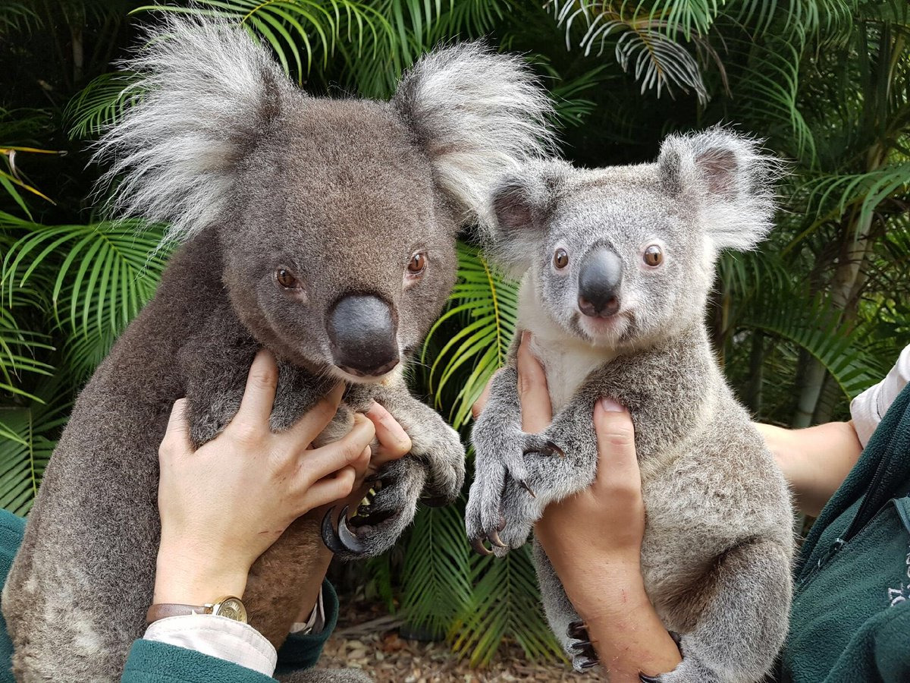
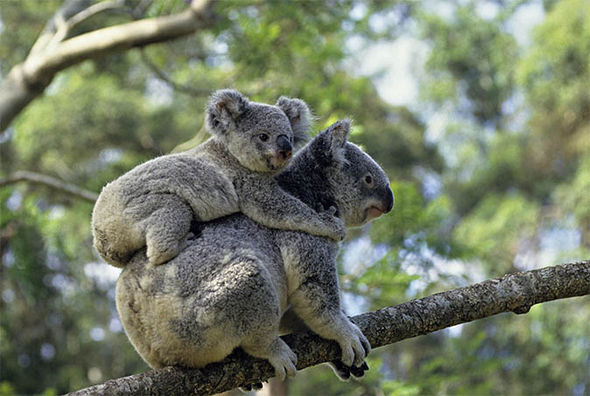

What is the koala?
The koala is an iconic Australian animal. Often called the koala “bear,” this tree-climbing animal is a marsupial—a mammal with a pouch for the development of offspring. Though koalas look fuzzy, their hair is more like the coarse wool of a sheep. They have two opposing thumbs on their hands, and both their feet and hands have rough pads and claws to grab onto branches. They have two toes, fused together, on their feet, which they use to comb their fur.
Koalas live in the eucalyptus forests of southeastern and eastern Australia. When not sleeping, they’re usually eating. They rely on the eucalyptus tree for both habitat and food. Koalas can eat more than a pound of eucalyptus leaves a day. Eucalyptus is toxic, so the koala’s digestive system has to work hard to digest it, breaking down the toxins and extracting limited nutrients. That’s why koalas sleep so much—they get very little energy from their diet. Tucked into forks or nooks in the trees, koalas may sleep for 18 to 22 hours.
Koalas usually don’t drink much water as they get most of their moisture from these leaves. Koalas can even store leaves in their cheek pouches for later. They eat so much eucalyptus that they often take on its smell. Each Koala’s ‘home' is made up of several trees called HOME TREES. They visit these same trees regularly. The area covered by these trees is called the Koala’s HOME RANGE. Each Koala has its own home range, which overlaps those of other Koalas. Unless breeding, they don’t normally visit another Koalas home trees. The size of each home range depends upon a range of factors including the quality of the habitat and the sex, age and social position in the population of the Koala.
Koalas in the southern parts of Australia (left) are considerably larger and have thicker fur than those in the north (right).This is thought to be an adaptation to keep them warm in the colder southern winters.
Threats to survival
Koala numbers plummeted in the late 19th and early 20th century from hunting for their fur. Now they face serious threats from habitat loss. Land clearing, logging, and bushfires—especially the devastating 2019-2020 season—have destroyed much of the forest they live in. Koalas need a lot of space—about a hundred trees per animal—a pressing problem as Australia's woodlands continue to shrink. Koalas are listed as vulnerable by the International Union for the Conservation of Nature, which has named the species one of 10 animals most vulnerable to climate change.
Why it matters
The koala is the quintessential Australian animal, known globally and much loved. People come from all over the world to see koalas at wildlife parks and zoos. It is featured in advertisements, games, cartoons, and as soft toys. In the wild, koalas serve as ambassadors for the many other species that also inhabit the Australian bush. Protecting bushland areas in an effort to save koala populations also
protects the habitat of a wide range of animal and plant species such as possums, gliders, wombats, quolls, birds, and reptiles. Koalas also have great cultural significance to Aboriginal Australians and feature in Dreamtime stories, songs, and rock art.